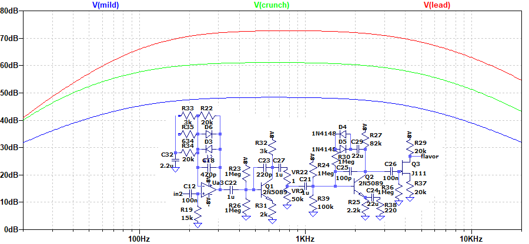

Empress Effects Distortion 解析
2023年08月15日 カテゴリー：修理・改造・解析
技術力が高そうなメーカーのエフェクターということで、Empress Effects Distortionを中古で入手し解析しました。KiCadとLTspiceの回路図データはGitHubにあります。
まず気づいた点として、ケースのグラウンド接続がありません。また、なぜか出力ジャックに向かう基板上のパターンがカットされ、青い配線材が直付けされています。これらについては前の持ち主が何らかの改造を行った可能性があるので何とも言えません。基板上は全て表面実装部品で、高誘電率系積層セラミックコンデンサと思われるものが多く使われています。
▽回路図
オペアンプだけではなく、トランジスタやFETも使われています。Q1やQ3ではほとんど増幅されていないので、過大入力による歪みが狙いなのかもしれません。
- Q2上側の抵抗R30
ダイオードに直列に入っている抵抗R30の役割がよくわからなかったのですが、X（旧Twitter）で歪みの質感を変えるために採用されていることがあるという情報をいただきました。WAY HUGE Swollen Pickle MkIIでは、同様の箇所に470kΩAカーブのポットがあるようです。今回は1MΩという大きな抵抗値ですが、シミュレーションでクリッピングが電源の8Vではなく7.8V付近になるという影響が確認できました。
- 電源
高電圧が入力された時の対策だと思われる8Vのレギュレータが入っています。そして負電圧がオペアンプに供給されますが、トランジスタの部分には負電圧は使われていません。
▽シミュレーション
- 入力部
抵抗値を固定したBaxandall（BAX型）トーンコントロール回路となっていて、低音域と高音域を減衰させています。
- 増幅部

crunch／mild／lead切替により、オペアンプU3Aでの増幅率と低音域が変化します。
- 低音域補強
増幅部の後にあるフィルターです。回路としては高音域側を減衰させる形に見えますが、ここまでにカットされた低音域を補う目的があると考えられます。
- bass treble
再びBAX型トーン回路が出てきます。C6の影響で少しだけ高音域が減衰しています。